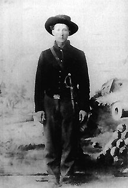

|

NAME: William Gracen Cooper
BORN: 1841
DIED: 1926
ALLEGIANCE: Union
HIGHEST RANK: Private
UNITS: 45th Missouri Militia; 9th Missouri Cavalry; 1Oth
Missouri Cavalry, Company C; Blair's Bodyguards
RECORD: Joined the 9th Missouri Volunteer
Cavalry, September 1862; consolidated into 10th Missouri
Volunteer Cavalry, December 1862. Detached to Blair's
Bodyguards, December 1862. Fought at Battle of Chickasaw
Bayou and in capture of Arkansas Post, December 1862 and
January 1863. Participated in Battle of Champion's Hill and
siege of Vicksburg, May to July 1863. Present at second
attack on Jackson, Mississippi, July 1863. Mustered out June
1865.
|
|
William Gracen Cooper never attained a rank higher than
private, but as a personal bodyguard to a Union brigadier
general, he participated in one of the most significant
campaigns of the Civil War and rubbed shoulders with some
real giants of the time.
Cooper's military experience began in August 1862 when he
enrolled in the 45th Missouri Militia. Just a month later,
the Linn County, Missouri, farmer joined the 9th Missouri
Cavalry Volunteers, which was consolidated with the 28th
Missouri Infantry in December 1862 to form the 10th Missouri
Cavalry. Along with the rest of Company C, Cooper was
detached to Helena, Arkansas, to serve as a personal
bodyguard, or escort, to Brigadier General Francis Preston
Blair, Jr.
Blair's brigade, part of Major General William T. Sherman's
XV Corps of the Army of the Tennessee, participated in Major
General Ulysses S. Grant's Vicksburg Campaign. Cooper was
present for the Battle of Chickasaw Bayou in December 1862,
the capture of Arkansas Post in January 1863, the bayou
expeditions north of Vicksburg in March, and Sherman's
demonstration against Haynes's and Drumgould's bluffs near
Snyder's Mill at the end of April and beginning of May 1863.
After crossing the Mississippi River with the brigade on May
11, Cooper and his fellow escorts participated in the Battle
of Champion's Hill and the engagement at Big Black River.
Later that month Cooper witnessed the first and second
assaults on Vicksburg, and then the weeks-long siege of the
city that followed. When Confederate Lieutenant General John
C. Pemberton formally surrendered to Grant on July 4, 1863,
Cooper was with Blair at the Union line north of Vicksburg.
In July, Cooper participated in the second attack against
Jackson, Mississippi.
September 1863 found Cooper back at Vicksburg, aboard the
hospital ship Red Rover. From Vicksburg he was sent
to Memphis, and then was moved from hospital to hospital
with an unknown ailment. He was in the Western Sanitary
Commission Hospital in St. Louis, Missouri, when the 10th
Missouri Cavalry mustered out at Nashville, Tennessee, on
June 20, 1865.
Cooper eventually recovered and returned to farming,
marrying the widow of a Union soldier who had been killed by
bushwhackers while home on leave for the birth of a child.
Cooper and his wife raised her two children and nine of
their own. In 1891, he moved his family by covered wagon to
Perkins, Oklahoma, just missing the Oklahoma Land Rush. In
addition to farming, he became a Free United Brethren
minister, preaching in schoolhouses and brush arbors around
the churchless Indian Territory. The former member of
Blair's Bodyguards died on October 28, 1926, at the age of
85.
Source: Civil War Times Illustrated
41:1 (March 2002), 80.
|